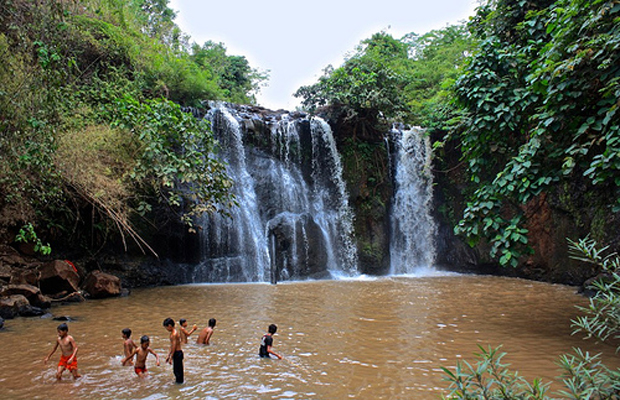
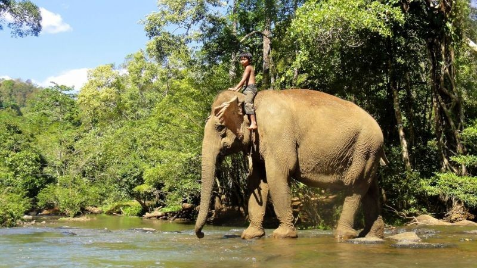
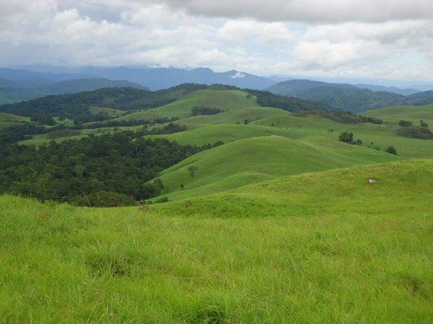
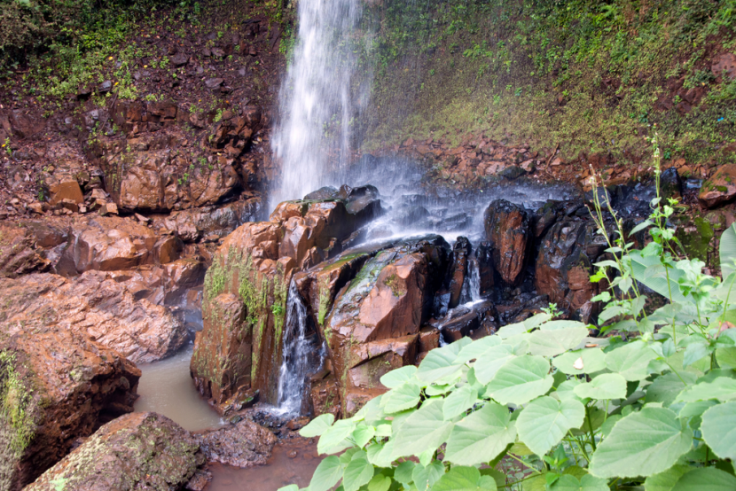
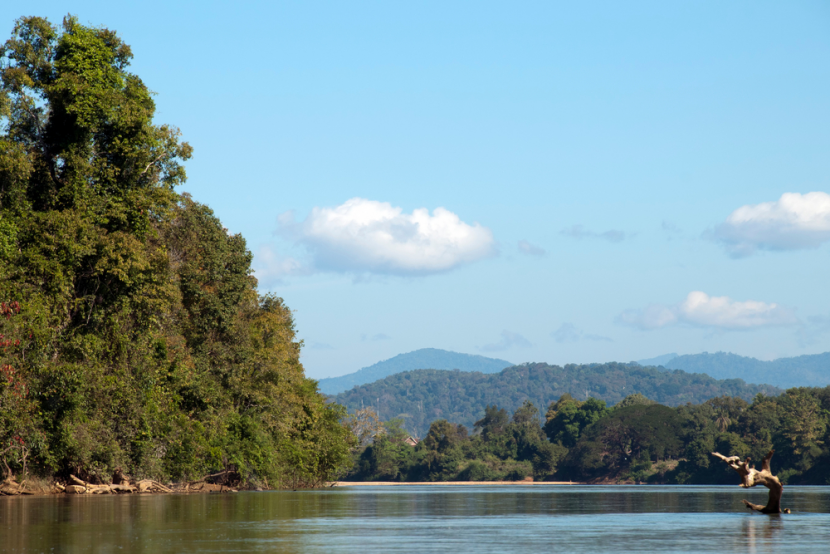

Ratanakiri or Ratanak Kiri (Khmer: រតនគិរី), is a province of northeast Cambodia. It borders the provinces of Mondulkiri to the south and Stung Treng to the west and the countries of Laos and Vietnam to the north and east, respectively. The province extends from the mountains of the Annamite Range in the north, across a hilly plateau between the Tonle San and Tonle Srepok rivers, to tropical deciduous forests in the south. In recent years, logging and mining have scarred Ratanakiri's environment, long known for its beauty.For over a millennium, Ratanakiri has been occupied by the highland Khmer Loeu people, who are a minority elsewhere in Cambodia. During the region's early history, its Khmer Loeu inhabitants were exploited as slaves by neighboring empires. The slave trade economy ended during the French colonial era, but a harsh Khmerization campaign after Cambodia's independence again threatened Khmer Loeu ways of life. The Khmer Rouge built its headquarters in the province in the 1960s, and bombing during the Vietnam War devastated the region. Today, rapid development in the province is altering traditional ways of life.
Is the natural lake, which locates at the middle of mountain in Yeak Loam Commune, Ban Lung district from the Ban Lung town. The lake has square shape, approximate 800m diameter and 48m depth during the dry season, and occurs by volcano for centuries. The lake has clear water as the sea suitable for swimming, and there are tow harbors protruded to the above of the water for tourists to view the scenary and birds that are swimming along the stretch of the forest surrounding the lake. information to tourists, and also for displaying souvenirs and handicrafts made by ethnic minorities.
Near the shore of the Yeak Laom lake, is a museum built in traditional wooden style, to preserve and display all kinds of traditional hill tribe textiles, musical instruments, farming tools, fishing gear and clothes.Visitors may purchase the items for souvenir to take home.Brick House Bar set in the relaxing tropical garden inside Angkor Night Market which has a wide range of beers, wines and cocktails with pool table and live sports events and musical events per week, which caters both for tourist and expatriate alike.The Island Bar stands out as one of the only places in town where traditional Cambodian culture and architecture are fused with a cosmopolitan feel in an open-air, ambient setting.Set within the wild beauty of a jungle botanical garden, under an impressive bamboo tower, the bar and surrounding food court give the customer the ideal retreat to relax after shopping, plan their spending spree or simply soak up the exotic atmosphere.Many visitors return to The Angkor Night market just to revisit The Island Bar. With happy your prices all night and the barmen juggling cocktails who can blame them!
Cha Ong waterfall is in the forest in Cha Ong village, O'Chum commune, about 2 kilometers west of Ban Loung provincial town. It was given its name by the Kreung hill tribe living nearby.The waterfall gets its water from Phnom Eysei Patamak or Phnom Svay near Ban Loung provincial town. From its upper level, the water flows from a small canal before dropping 25 meters to a lower level. A mountain slop leads visitors to the bottom of the waterfall, where they can sit inside a cave and enjoy the view.The waterfall gets its water from Phnom Eysei Patamak or Phnom Svay near Ban Loung provincial town from its upper level, the water flows from a small canal before dropping 25 meters to a lower level. A mountain slop leads visitors to the bottom of the waterfall, where they can sit inside a cave and enjoy the view.Ka Chanh waterfall is located in Ka Chanh commune, Ban Loung district, about 6 kilometers southeast of Ban Loung provincial town. The waterfall is 12 meters high and is fed year round by the OKan Teung canal.From the waterfall the water flows into Sre Pork River in Lum Phat district. The waterfall was given its name by the Kreung ethnic minority in Ka Chanh village.There are a number of scenic rubber plantations along the canal leading to the waterfall. The base of the waterfall, which is a lovely place for picnic, can be reached by climbing down are also available.We call the waterfall 'Cha Ong' because we follow the ethnic minority of Kreung at Cha Ong village closed to the waterfall. The source of this waterfall is from the mountain named 'Ey sey Pak Ta Mak' or called 'Phnom Svay' closed to the Ban Lung town. The situation from above is a small canal which continuously flows through the broken rocks, then to the stream below in 25-kilometer height. To view the waterfall, we should go down to the stream below where we have seen a big rocky cave with plain roof. At the bottom of the stream, there are many big rocks used as the seats for viewing the great and interesting water falling down from the mountaintop.
Lumphat Wildlife Sanctuary covers an area of 2,225 sq. km and charms visitors with its picturesque forests and tranquil surroundings. It is a haven for a diversity of wildlife, including some extremely endangered species.The Sanctuary with its mountains, forests, and lowland, makes an ideal shelter for large mammals such as elephants, bantengs, gaurs, tigers, and wild buffalos, as well as bears and other smaller carnivores and primates; not forgetting more than a hundred bird species including waterfowls.Besides providing shelter for wildlife, the Sanctuary is also home to more than 100 indigenous families, mostly from the Phnong minority who survive entirely on the park’s natural resources. They rely on natural resins, vines, rattans, herbal plants, and a variety of forest products.Tourists wishing to visit the Lumphat Sanctuary should contact the park rangers of Phnom Prik National Park. They will provide guide tour around interesting sites and if visitors would like to see more, they can arrange to camp here for up to a week to take them all in.
Virachey National Park is a national park in north-eastern Cambodia. Although partly protecting flora and fauna of international conservation priority, the park is under serious threat from illegal logging in the region.The park is one of only two Cambodian ASEAN Heritage Parks and is one of the top priority areas for conservation in Southeast Asia. The park overlaps Ratanakiri and Stung Treng Provinces in northeastern Cambodia covering an area of 3,325² km.Virachey National Park was created under the Royal Decree Concerning the Creation and Designation of Protected Areas, issued on 1 November 1993, and is under the administration of the Ministry of Environment of Cambodia.Ethnic MinoritiesThe human population adjacent to Virachey National Park is characterised by a high percentage of ethnic minority groups. The majority are Kreung, Kavet, Brao, Lao and Lun people. Smaller numbers of Tampuen, Kachok, ethnic Chinese, ethnic Khmer and ethnic Vietnamese people are also found in the area.Most of these live in 60 villages, some of which were located inside what is now Virachey National Park. The reliance on natural resource use inside the protected area is critical to the survival of the local communities. The main products harvested are rattan, bamboo and malva nuts.
Ka Tieng waterfall is in the middle of lush forest at the Lbang I commune, Lumpart district, 7 kilometers south-west of Banlung Town. The name of Ka Tieng is originally got from Kreung hill tribe in Ka Kieng village. The waterfall is about 10 meters high, which is flows and falls throughout the year. Visitors will feel release with the huge clear waterfall and a beautiful natural landscape around the area. Around the waterfall, there is forest full of big and small trees projecting the cool shadow suitable for resting, viewing the water falling down and having picnic here. The Katieng Waterfall, Ratanakiri is one of the less visited waterfalls in the area. You can enjoy some wonderful time if you combine your visit to this waterfall with an elephant ride. Elephant rides are available from the elephant village of Phume Kateung, north of the falls. You can also see the Katieng Waterfall, Ratanakiri from flights, if you are lucky. When the plane is landing or taking off, watch out for the falls. Elephant rides to this falls are available for an hour and a half. These can be organized by the lodges you are staying in.We went to see 3 waterfalls in total, visiting Ka Tieng, Kinchaan and Chaa Ong. To get to Ka Tieng. we had to go through a small river with the bike, which was pretty nerve racking, but worth the effort. On to Kinchaan, where we met some local guys keen to show off their cliff jumping skills, although i was happy to remain dry after my last cliff jumping experience ended in hospitalisation, with a torn medial knee ligament. I was happier to get wet at Chaa Ong, where Julia and I took a dip in the powerful spray dropping around 10 metres. We headed back to Ban Lung at sunset, impressed by the waterfalls and happy i had coped on the motorbike.Ka Tieng waterfall is located in Labang I commune, Lum Phat district, about 7 kilometers southeast of Ban Loung provincial town. Ka Tieng is below Ka Chanh waterfall and about 3 kilometers from it.
Located about 40km from northern part of the capital town of Banlung, the Se San is an all seasons river and one of the most important ecology systems that overlaps the provinces of Stung Treng and Ratanakiri. On the surface, some stretches of water glitter like diamonds and emeralds with white sandy beaches running alongside attracting scores of tourists to sunbath and make merry. The clear water along the river reflects the colourful sky-backed mountains and jungle and even during the dry season, the ambience can be charming. The numerous stretches of beach boast many spots for swimming and fishing; such recreational activities attract both local and international tourists all year round.On one side of the Se San River the Veon Sai commune is a harmonious territory occupied by several ethnic groups; Khmer, Chinese, Kroeng, and Laotian people have been living there for generations. While the Chinese observe their own Chinese culture and traditional practices, the other groups also have their own ancestral practices to keep their identities. Here, they all communicate commonly in Chinese although all of them do speak Khmer and understood the Cambodian language well. The Hill Tribe, and people of Laotian ethnicity speak in their mother tongue among their own kind.Most of the people here are farmers, fishermen and local traders.